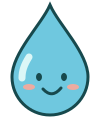

Damla’nın Yolculuğu
Fahrettin Sert İlkokulu
☷
⛶
×
CDC · Rainwater and health ↗
Damla’nın Yolculuğu
Fahrettin Sert İlkokulu · Konyaaltı / Antalya
Please enable JavaScript. / JavaScript’i etkinleştirin. / Activa JavaScript.